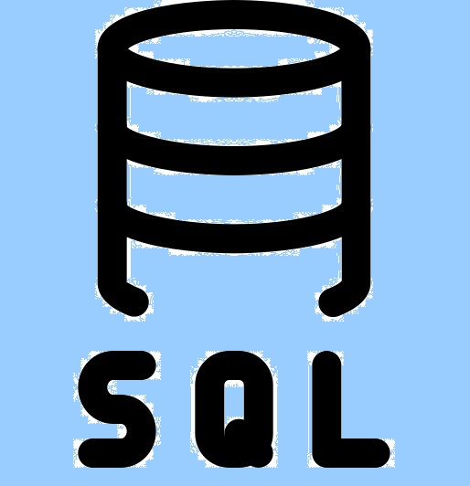
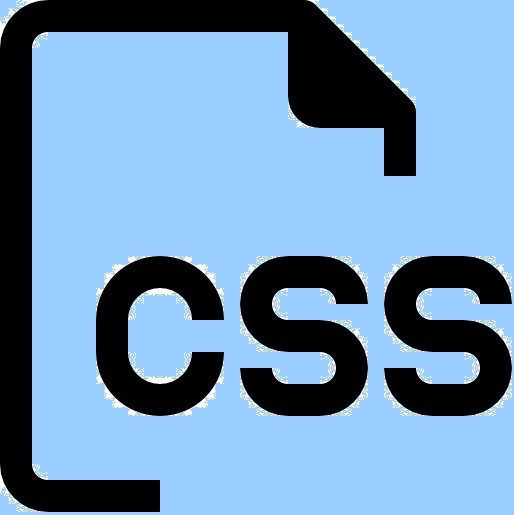

BMC ARS Remedy ITSM {Customizing, Developer Studio, log analysis}

SQL {data extraction, statements for fixing workflow exceptions}

HTML/CSS/Javascript
Built Tool - BMC ARS - Orphaned Changes
Custom tool for retrieving and treating orphaned change requests. A customizing built in BMC ARS / Developer Studio which extends / runs in BMC ARS as well. Benefit: Orphaned change requests can be treated by not having to execute plain SQL statements / direct DB access.
Built Tool - HTML/CSS/JS - YARD
HTML/CSS/JS based tool for simplified access of BMC ARS forms, creating BMC ARS requests in a fast manner and a collection of often used links/tools in corporate environments.